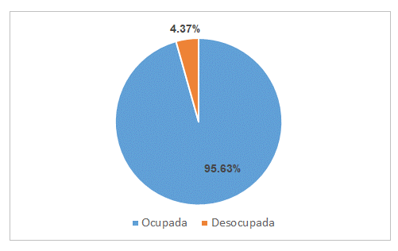
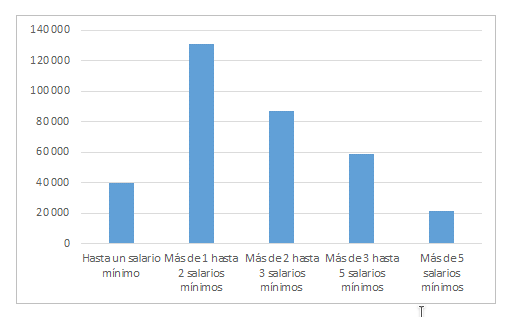

De acuerdo a la Encuesta Nacional de Ocupación y Empleo (ENOE) del Instituto Nacional de Estadística y Geografía (INEGI), la Población Económicamente Activa (PEA) de la Zona Metropolitana de La Laguna (ZML), es decir, la que se encuentra trabajando o en búsqueda de empleo, aumentó 1.16% respecto al trimestre anterior para ubicarse actualmente en 531 mil personas. De dicha población, el 4.37% está desocupada.
En términos técnicos, La Laguna se encuentra en situación de pleno empleo, ya que así se le considera a la desocupación menor al 5%. El término se debe a que siempre habrá personas que dejan su trabajo porque ya no están de acuerdo con sus condiciones laborales, se trasladan a otras ciudades, están en transición o están por graduarse.
Por ejemplo, en el caso de La Laguna el 52% de las personas desocupadas en la zona metropolitana renunció o dejó su empleo. Además, la población subocupada, es decir, la que involuntariamente trabaja menos de 35 horas semanales, se ha reducido 34.61% de junio de 2017 a junio de 2018.
En cuanto a la Población No Económicamente Activa (PNEA), de las 315,685 personas que la conforman: 57,987 tienen interés para trabajar pero no buscan empleo por considerar que no tienen oportunidad de encontrarlo y 257,698 no busca porque no tiene necesidad o interés de trabajar. Aproximadamente el 6.57% de las personas en edad para trabajar han desistido de buscar empleo porque ha decidido dedicar más tiempo a estudiar y postergar su entrada al mundo laboral o por considerar que no tiene posibilidades, la cifra es menor al porcentaje a nivel nacional, que es de 9.8%.
Por otro lado, el 25% de las personas en edad para trabajar no tiene interés por hacerlo, ya sea porque tiene a cargo niños pequeños, enfermos o ancianos, o porque algún familiar les prohíbe trabajar o también por algún impedimento físico de carácter temporal.
Casi el 60% de las personas desocupadas tardan únicamente un mes en encontrar trabajo, el 25% de 1 a 3 meses, el 13% de 3 meses a medio año, el 2.4% de 6 meses a un año y el 0.59% más de un año, que corresponde aproximadamente a 137 personas.
El ingreso por hora trabajada de la población ocupada se redujo un 2.97% respecto al año anterior, al pasar de 45.79 a 44.43 pesos para este año, pero es ligeramente mayor respecto al trimestre pasado de este mismo año que era de 43.84 pesos por hora.
Dicho ingreso incluye todas las condiciones de ocupación, aunque la población ocupada de la ciudad se compone principalmente por trabajadores subordinados y remunerados, los cuales representan 74.81% del total. Por su parte, los trabajadores por cuenta propia, son el 17.43% de la población ocupada, los empleadores el 8.82% y los trabajadores no remunerados representan al 2.19%. Cabe destacar que si hacemos una distinción por género, hay 2 veces más empleadores hombres que mujeres, y 3 veces más trabajadoras no remuneradas que trabajadores no remunerados.
Los resultados mostraron que sólo el 1.44% de la ciudad se dedica a la industria primaria, 28.73% a la secundaria y el 69.83% a la terciaria. Los dos sectores con más empleabilidad son el comercio con el 22.25% y la industria manufacturera con el 20.30%. El 40% de la población ocupada trabaja en el sector informal, menor al 66% nacional, y tuvo una disminución de 3.10% de junio de 2017 a junio del año actual en La Laguna.
Según datos de junio de este año, el 53.89% de las personas ocupadas recibe 2 salarios mínimos o menos. De junio de 2017 al mismo mes de 2018 disminuyeron en 13.66% las personas ocupadas que no reciben ingresos, aumentaron en 15.14% las que reciben un salario igual o menor a 2 salarios mínimos y disminuyeron un 22.51% quienes reciben más de 2 salarios mínimos.
Población ocupada en La Laguna

Fuente: INEGI (ENOE)
Niveles de ingreso de la población ocupada

Fuente: INEGI (ENOE)